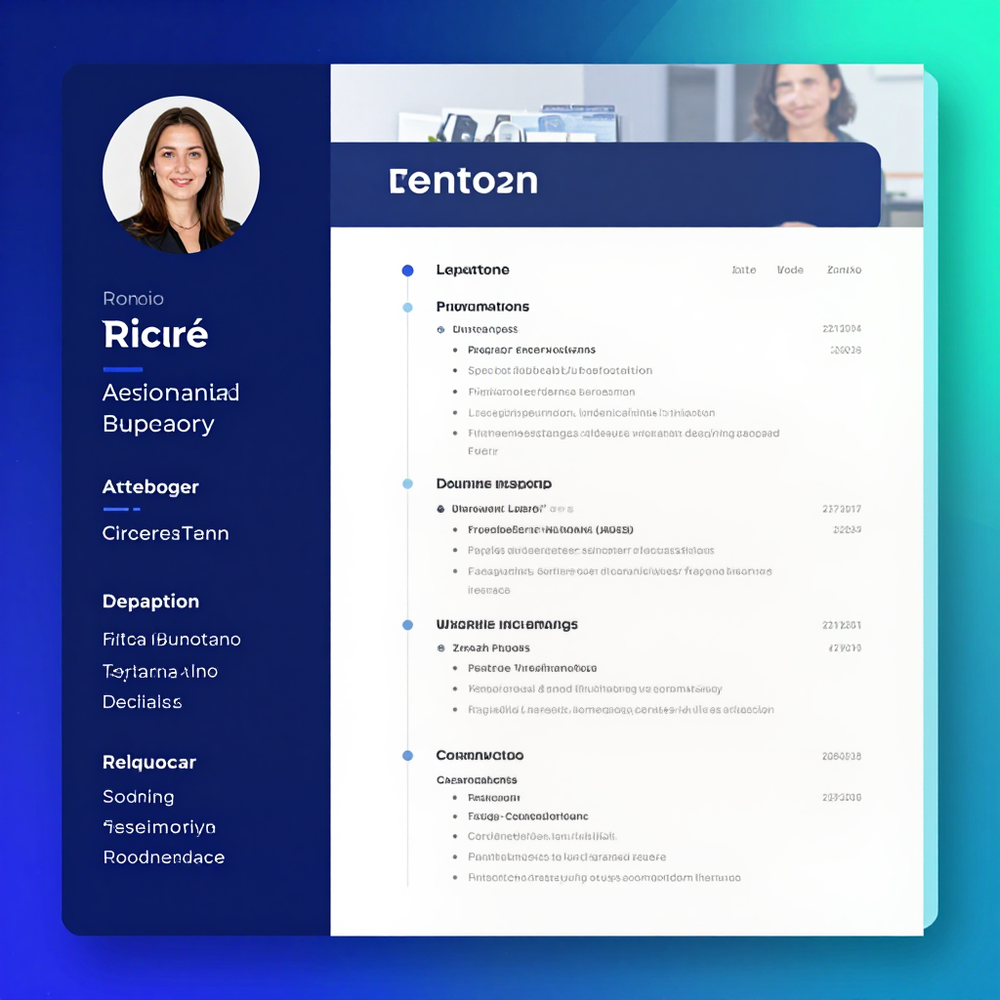

Career
Best AI Tools for Resume Writing 2026: Get Hired Faster

AI Resume Tools That Get You Hired
AI resume writing tools analyze job descriptions, optimize keywords, and create tailored resumes that pass ATS systems. We tested the top AI resume builders to find which ones actually help you land interviews.
| Tool | Best For | Price | Rating |
|---|---|---|---|
| Teal Resume | Best AI resume builder | Free / $9/mo | 9.5/10 |
| Kickresume | Best templates | Free / $5/mo | 9/10 |
| Resume.io | Best design options | $3/mo | 8.5/10 |
| ChatGPT | Best free resume writer | Free / $20/mo | 9/10 |
| Jobscan | Best ATS optimization | Free / $10/mo | 8.5/10 |
| Enhancv | Best creative resumes | $7/mo | 8/10 |
| Resume Worded | Best resume scoring | Free / $10/mo | 8/10 |
How to Use ChatGPT for Resume Writing
ChatGPT is the most versatile free tool for resume writing. Paste your current resume and a job description, then ask ChatGPT to tailor your resume with relevant keywords, improve bullet points with quantified achievements, and optimize the summary section.
Best Free AI Resume Tools
- ChatGPT Free — Write and optimize resume content
- Teal Free — Basic AI resume tailoring
- Jobscan Free — ATS compatibility check (limited)
- Resume Worded Free — Basic resume scoring